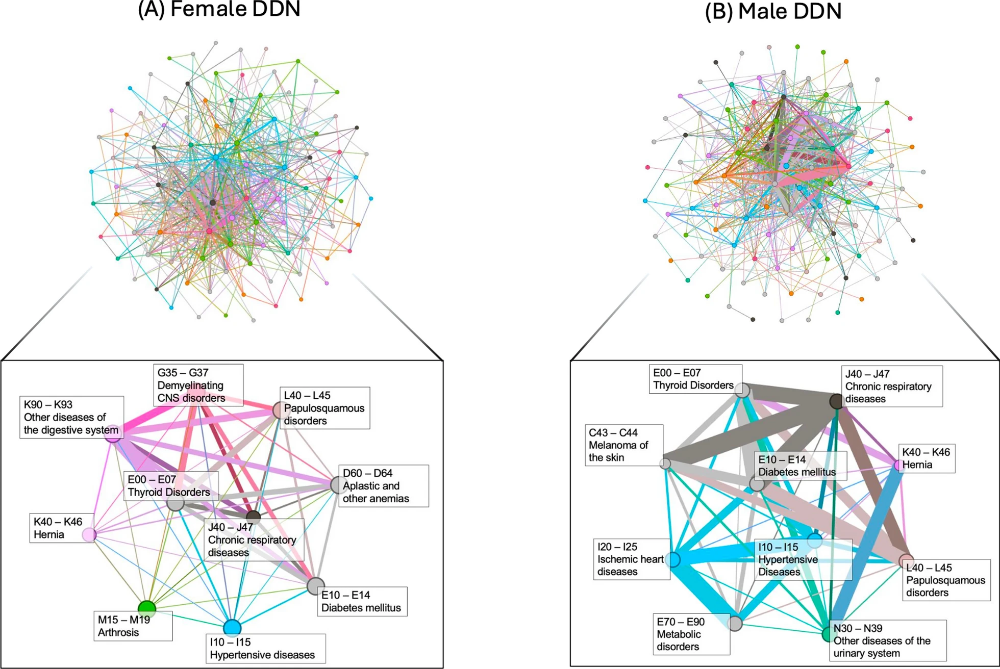
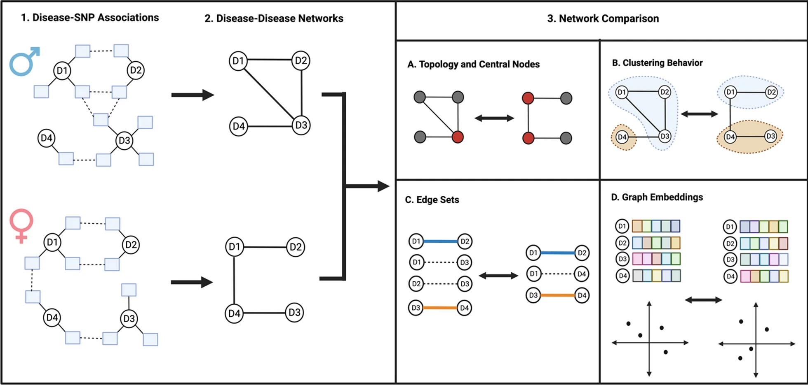

Happy 2025 and welcome to a new year of [VS]Codes! Today I will be providing a brief overview of the latest publication to come out of my PhD in biomedical informatics from the University of Pennsylvania: “The interplay of sex and genotype in disease associations: a comprehensive network analysis in the UK Biobank”. This was the last project that I completed for my PhD, and it brings together multiple components that I developed over the years into a single paper focused on the network-based comparison of genetically-derived cross-disease associations across biological sex. I’d like to give a huge thanks to Dokyoon Kim, YY Ahn, and Jakob Woerner for their help and support getting this work published!
Unraveling the Sex-Specific Threads of Disease Associations

Complex diseases rarely impact patients one-at-a-time. Shared biological, environmental, and genetic factors can all contribute to onset of multiple phenotypes in a single patient. These resulting cross-phenotype associations can impact patients with increased health burdens and risk of morbidity. Through shared genetic and biological pathways, multiple diseases form complex networks of associations. Understanding this intricate web of disease multimorbidities has long been a challenge in biomedical research.
Sexual dimorphism is another integral component in the study of disease pathophysiology - indeed, biological sex has been found to affect the prevalence, onset, and severity of nearly all human diseases. Without a knowledge of the impact of sex on disease, the pursuit of transformed patient care through personalized disease prediction and treatment will remain incomplete. Multiple factors contribute to sex-specific effects on disease - one influential factor is genetics. The interactions between genotype and sex on disease outcomes can be referred to as “genotype-by-sex” or “GxS” effects. In 2021, Bernabeu et al. conducted a sex-specific phenome-wide association study (PheWAS) in the UK Biobank (UKBB) and found evidence of GxS effects for a number of diseases including ankylosing spondylitis, gout, and hypothyroidism.
In this study, we explored the role of genotype-by-sex (GxS) interactions on the influence of cross-phenotype associations, which can ultimately impact the risk of severe health outcomes. Our findings shed light on how sex-specific genetic factors shape the landscape of disease connections, providing a fresh perspective on the importance of considering sex in disease research and precision medicine.
Key Findings from Our Study

By constructing and comparing sex-stratified disease-disease networks (DDNs) derived from the UKBB data generated by Bernabeu et al., we made several significant observations:
Both male and female DDNs exhibited similar overall structures, but the significantly lower Jaccard similarity score of the networks’ edge sets and the inconsistent clustering behavior of diseases across these networks indicates the presence of GxS interactions.
In the male-specific DDN, there was a higher concentration of edges within circulatory diseases, while the female-specific DDN exhibited a broader spread of connections across musculoskeletal, digestive, and endocrine/metabolic diseases.
Females displayed a stronger overall spread of disease-variant associations, with a higher average weighted degree and shorter embedding distances in the DDN, suggesting a more expansive genetic influence on multimorbidity risk.
Certain diseases exhibited sex-specific centrality in the DDNs: Ischemic heart diseases and metabolic disorders were central in the male DDN, while demyelinating diseases and osteoarthritis were central in the female DDN.
The study also highlighted the role of sexually-dimorphic genetic variants, such as rs9357120 and rs3130552, which showed differential associations with metabolic disorders in males and autoimmune disorders in females.
Implications for Precision Medicine
Our findings underscore the necessity of incorporating sex as a fundamental variable in biomedical research. By understanding the unique ways in which diseases interconnect for males and females, we can better predict disease progression, tailor treatments, and ultimately improve health outcomes for both sexes.
Our study also identifies future research directions, including the comparison of sex-specific DDNs across different populations, the application of more advanced graph representation learning methods, and the investigation of individual genetic variants contributing to sex-specific disease associations.
Dive Deeper
For those interested in the intricate details of our methodology and findings, I invite you to read our full paper, published in Human Genomics, here. We provide more insight into the network-based methods used to compare our graphs, as well as a deeper discussion of the biological context underlying the takeaways of our analysis.